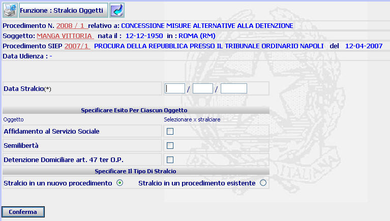
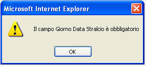
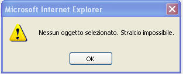

INSERIMENTO STRALCIO OGGETTI: La funzione consente di stralciare uno o più oggetti dal procedimento Sius iscritto. N.B. Lo stralcio deve essere effettuato prima dell'emissione dell'ordinanza (o del decreto)
LE MASCHERE VIDEO
La funzione viene realizzata attraverso la maschera seguente, composta dalle seguenti sezioni:
| data stralcio | |
| esito per ciascun oggetto | |
| tipo stralcio |

COME FARE PER ...
| Per visualizzare il dettaglio del procedimento Sius l'utente deve cliccare sul link relativo all'Anno/Numero del procedimento Sius evidenziato in rosso; |

| Per visualizzare il dettaglio del soggetto l'utente deve cliccare sul link relativo al cognome/nome del soggetto evidenziato in rosso; |

| Per visualizzare il dettaglio del procedimento Siep l'utente deve cliccare sul link relativo all' Anno/Numero del procedimento Siep evidenziato in rosso; |

|
Per effettuare lo stralcio di uno o più oggetti associati al procedimento Sius, l'utente deve: |
Inserire la data nella quale lo stralcio viene effettuato
Selezionare l'oggetto (o gli oggetti) da stralciare cliccando sul relativo check button
Indicare se gli oggetti stralciati devono confluire in un procedimento già esistente o se devono dar luogo ad un nuovo procedimento, cliccando sul relativo radio button
N.B. Nel caso in cui si scelga la seconda opzione, vengono visualizzati i campi nei quali inserire l'anno/numero del procedimento nel quale gli oggetti stralciati devono confluire
Confermare i dati inseriti selezionando
il bottone

CAMPI
I campi da compilare sono i seguenti:
| Data stralcio | Campo (obbligatorio) nel quale va inserito la data in cui viene effettuato lo stralcio |
| Anno/Progressivo |
Campi nei quali deve essere inserito l'anno/numero del procedimento nel quale gli oggetti stralciati devono confluire, nel caso in cui si effettui il relativo tipo di stralcio |
PULSANTI
Sono presenti i pulsanti
 e
e
 facenti parte del gruppo di
pulsanti di "Uso Comune"
facenti parte del gruppo di
pulsanti di "Uso Comune"
BOTTONI
Oltre ai comandi funzionali relativi al menù verticale è presente il seguente bottone:
|
COMANDI |
DESCRIZIONE |
|
|
A fronte di tale comando, il sistema dopo aver verificato la validità dei dati specificati, presenta la maschera di dettaglio stralcio oggetti. |
CONTROLLI
Il sistema effettua i seguenti controlli:
| verifica che sia stato compilato il campo "Data stralcio", fornendo in caso contrario il seguente messaggio |

|
verifica che sia stato selezionato almeno un oggetto da stralciare, fornendo in caso contrario il seguente messaggio |

|
verifica che, nel caso in cui sia stato il tipo di stralcio "stralcio in un procedimento esistente", il procedimento nel quale si vogliono far confluire gli oggetti stralciati sia riferito allo stesso soggetto, fornendo in caso contrario il seguente messaggio |